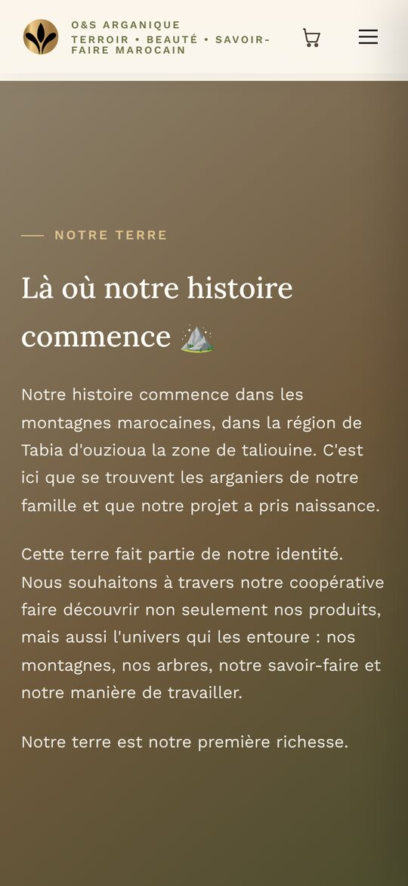
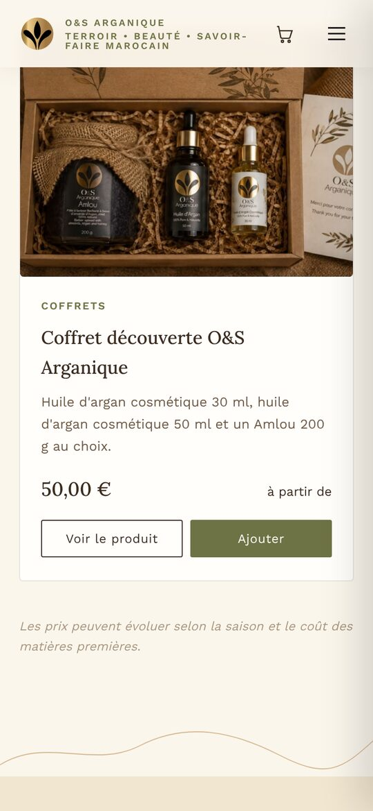

Website · Coopérative & boutique
O&S Arganique — Du terroir à votre maison
O&S Arganique est une coopérative familiale de la région de Tabia, près d’Aoulouz, qui prépare de l’amlou et de l’huile d’argan de façon artisanale. Nous avons conçu et développé son site, entre vitrine et boutique.
Une ouverture qui raconte la promesse de la marque, l’histoire de la famille et de sa terre, le chemin du fruit au produit, puis les produits avec leurs prix, les avis, une FAQ et la livraison. Tons argan, olive et crème, serif chaleureuse : un site qui sent le terroir.


- 01
Récit de marque
Une famille, une terre, un savoir-faire transmis.
- 02
Du fruit au produit
Les cinq étapes, de la récolte à la commande.
- 03
Boutique
Amlou, huile d’argan et coffrets, avec prix et panier.
- 04
Confiance
Avis clients, FAQ et livraison en France.